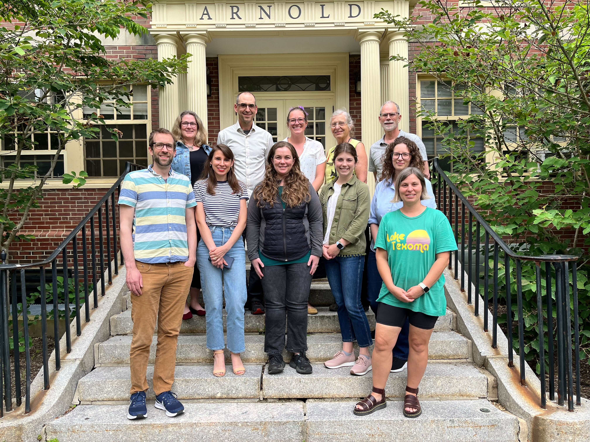

About the hubverse
The Consortium of Infectious Disease Modeling Hubs brings together groups working on developing and running modeling hubs in different outbreak prediction settings in collaboration with national and international health agencies, such as the US and European Centers for Disease Control and Prevention.

Front row (L-R): Evan Ray, Melissa Kerr, Rebecca Borchering, Emily Howerton, Lucie Contamin, Anna Krystalli
The initial modeling hubs were developed to provide nowcasts, forecasts, or scenario projections of outbreaks. While the infrastructure we created to support these efforts is readily generalizable to other applications, we note that these motivating examples were for applications that focused on (a) predictive modeling and (b) outbreak settings.
Building off of systems designed for influenza forecasting challenges led by the US CDC, the Reich Lab at UMass-Amherst, in collaboration with the US CDC, developed the US COVID-19 Forecast Hub in early 2020 to support COVID-19 forecasting efforts. This infrastructure was later adapted for use by several other modeling hubs:
- German/Poland COVID-19 Forecast Hub
- US COVID-19 Scenario Modeling Hub
- European COVID-19 Forecast Hub
- German Hospitalization Nowcast Hub
- US Influenza FluSight 2022 Challenge
The hubverse provides tools and a unified framework for aggregating, visualizing, and evaluating forecasts. Although infectious disease forecasting motivated the development of these tools, the approach is meant to be versatile so that the hubverse can be used for other types of forecasts.
Scope
Several groups that have worked on supporting and developing the modeling hubs came together in 2022 to initiate a community-driven effort to generalize hub-related tools that were developed “on the go” during the first two years of the COVID-19 pandemic.
The Consortium of Infectious Disease Modeling Hubs aims to develop a central open-source suite of tools for creating, hosting, maintaining, and running a modeling hub. While the motivating applications focused on predictive time-series-style modeling of outbreaks, the tools developed as part of this effort are designed to be more general and could be used for other purposes, e.g., for aggregating estimates of parameters of interest.
The ultimate goal of this project is to provide a suite of portable and open-source resources that could be relatively easily adapted by new modeling hubs without duplicating efforts.
History
This short paper on collaborative hubs provides a thorough discussion of forecasting hubs for infectious diseases, including the reasoning behind them.
Reich, N. G., Lessler, J., Funk, S., Viboud, C., Vespignani, A., Tibshirani, R. J., … & Biggerstaff, M. (2022). Collaborative hubs: making the most of predictive epidemic modeling. American journal of public health, 112(6), 839-842.
In the early 2010s, there were many infectious disease forecasting models, but most were published months to years after the forecasted event. These models often had very different targets they were forecasting, such as weekly incidence, epidemic duration, monthly visits, and time of peak incidence. Additionally, the accuracy of these models was evaluated using very different metrics, such as the mean absolute error, median absolute error, and correlation. These factors made comparing forecast models fairly, consistently, and accurately very challenging. In a scoping review of influenza forecasting in human populations published in 2014, Chretien et al. concluded that:
Comparing the accuracy of forecasting applications is difficult because forecasting methods, forecast outcomes, and reported validation metrics varied widely.
— Chretien et al. (2014)
Chretien, J. P., George, D., Shaman, J., Chitale, R. A., & McKenzie, F. E. (2014). Influenza forecasting in human populations: a scoping review. PloS one, 9(4), e94130.
At the same time, various efforts were made to aggregate and evaluate forecasts for infectious diseases to better address the challenges they pose from a public health perspective. Below is a timeline of some of the major “hubs” developed since 2013.

Motivation
There are many reasons to support collaborative modeling rather than relying on a single forecasting model. Firstly, ensemble models are both more accurate and useful than individual models:
- A simple average across models has better predictive performance
- Ensemble models are especially reliable for predicting across multiple targets
Additionally, there are scientific and structural benefits to modeling via hubs:
- They allow comparable evaluation across different models
- They provide opportunities for scientific exchange and for method & data sharing
- Hubs have a greater transparency of model outputs
- Hubs can also be a venue for communication with stakeholders
In working on collaborative forecasting, our principal objectives have been to
- Connect forecasting research to decision-making needs
- Evaluate forecast skills and facilitate forecasting research
- Operationalize forecasting
- Ensure increased data availability and real-time forecasting
- Forecast and evaluation standardization
- Community building (e.g., CSTE, academia, industry)
- Aggregate and coordinate the work done by varied forecasting teams
hubverse retreat
Our second annual “hubverse retreat” was held June 3–7, 2024 at the University of Massachusetts, Amherst. This year’s retreat focused on the future of hubs in the cloud, dashboarding, and the archiving of hub data using hubverse standards.
How to cite
A citation for the hubverse should look like the example below.
The Consortium of Infectious Disease Modeling Hubs. The hubverse: open tools for collaborative modeling. GitHub release v5.0.0, 17 Jan 2025 URL: https://github.com/hubverse-org
Presentations
Here are links to presentations about the hubverse (starting with the most recent):
- Presentation about the hubverse project given during the first Insight Net Quarterly Seminar - video (18 June 2024).
- “Hubverse: Supporting modeling hubs across the globe” presentation given at the ECDC RespiCast Hub Launch - slides (20 November 2023).
- Overview on the hubverse to CDC and CFA - video and slides (09 June 2023).